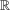
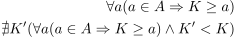
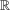

Supremum (Reelle Zahlen)
1. Definition
Sei A eine Teilmenge von :
Dann ist  das Supremum von A und ist die kleinstmögliche obere Schranke, d.h.
das Supremum von A und ist die kleinstmögliche obere Schranke, d.h.

1
schönere Notation ?
Sei A eine Teilmenge von :
Dann ist das Supremum von A und ist die kleinstmögliche obere Schranke, d.h.
schönere Notation ?